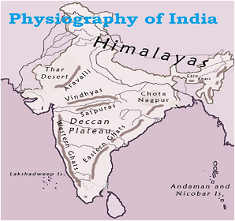

India has a unique culture and is one of the oldest and greatest civilizations of the world. It stretches from the snow-capped Himalayas in the north to Sun drenched coastal villages of the south and the humid tropical forests on the south-west coast, from the fertile Brahmaputra valley in its east to the Thar Desert in the west.
ndia shares its border from Afghanistan and Pakistan to the north-west, China, Bhutan and Nepal to the north, Myanmar to the Far East and Bangladesh to the east. Sri Lanka is separated from India by a narrow channel of sea formed by the Palk Strait and the Gulf of Mannar. The country can be divided into six zones mainly North, South, East, West, and Central and Northeast zone. It has 29 states and seven union territories.
India has a coastline of 7516.6 km of total land frontier 15200 km and Tropic of Cancer passes almost middle through its crossing over the states of Gujarat, Rajasthan, Madhya Pradesh, Chhattisgarh, Jharkhand, Paschim Banga, Tripura and Mizoram. India lies largely on the Indian Plate, the northern portion of the Indo-Australian Plate, whose continental crust forms the Indian subcontinent Physical divisions, are marked by natural configuration. India is divided into six physiographic divisions on basis of the varied physiographic features: units as follows: Northern and North-eastern Mountain; Northern Plain; Peninsular Plateau; Indian Desert; Coastal Plains; and Islands. The Himalayas are one of the youngest fold mountain ranges in the world of tectonic origin and comprise mainly sedimentary rocks. They stretch from the Indus River in the west to the Brahmaputra River in the east. It consists of three parallel ranges such as Himadri (Greater Himalayas), Himachal (Lesser Himalaya), and Shiwaliks (Outer Himalaya).